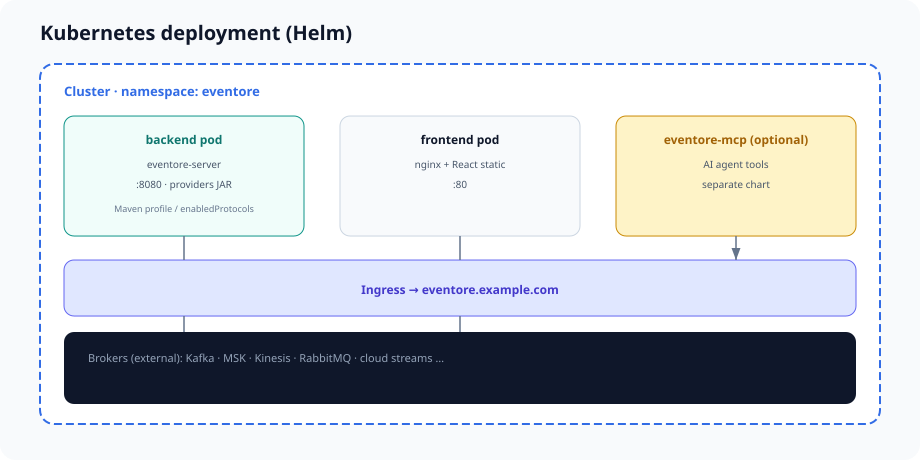

Deployment
Docker, Kubernetes, Helm, static product site, and optional MCP for AI agents.

Choose a deployment path
- Try the complete product: use the MQTT lab, which includes a test broker and builds from source.
- Use existing brokers: the repository’s
docker/docker-compose.stack.ymlstarts backend, frontend, and MCP; it does not start a broker. - Run on Kubernetes: use the single-replica Helm walkthrough below. You need a cluster context, Helm, kubectl, a reachable broker, and a StorageClass for the example PVC.
Kubernetes: install, connect, verify
Commands run from a repository checkout. The example uses release name and namespace eventore, a Kafka backend, one replica, a PVC, and local port forwarding. Resource values are starting examples, not measured sizing recommendations. Confirm the registry images are available in your environment.
- Create the namespace and API-token secret.
- Review the downloadable Helm values; set your StorageClass or existing claim if the cluster has no default.
- Render the manifests, install, and wait for both deployments.
kubectl create namespace eventore
kubectl -n eventore create secret generic eventore-api --from-file=api-token=./api-token.txt
helm template eventore ./deploy/helm/eventore -n eventore -f docs/examples/helm-single-replica.yaml
helm upgrade --install eventore ./deploy/helm/eventore -n eventore -f docs/examples/helm-single-replica.yaml --wait --timeout 5m
kubectl -n eventore rollout status deployment/eventore-backend
kubectl -n eventore rollout status deployment/eventore-frontendCreate api-token.txt beforehand with a strong token on a single line and no trailing newline; keep the file out of Git. Both the Secret and release must be in the same namespace.
# Example for a local port-forward; install from the repository root.
eventore:
streamProviders: [KAFKA]
deploymentMode: DEV
security:
apiTokenExistingSecret: eventore-api
apiTokenSecretKey: api-token
allowedOrigins: "http://localhost:8088"
connections:
persistence:
enabled: true
volumeType: pvc
size: 1Gi
backend:
replicaCount: 1
resources:
requests:
cpu: 250m
memory: 512Mi
limits:
memory: 1Gi
frontend:
replicaCount: 1
env:
apiBaseUrl: /api/v1
wsUrl: ws://localhost:8088/ws/stream
resources:
requests:
cpu: 50m
memory: 64Mi
limits:
memory: 128Mi
ingress:
enabled: false
In one terminal, forward the frontend service:
kubectl -n eventore port-forward service/eventore-frontend 8088:80Open localhost:8088, enter the token through Settings, and create a Kafka profile using a broker address reachable from the backend pod. The frontend proxies API and WebSocket requests to the backend.
In another terminal, forward the backend for a direct health check:
kubectl -n eventore port-forward service/eventore-backend 8080:8080Then check readiness and effective configuration:
curl http://localhost:8080/actuator/health/readiness
curl http://localhost:8080/api/v1/config -H "Authorization: Bearer YOUR_TOKEN"Expected: readiness reports UP; config shows the requested mode and Kafka protocol. Validate a broker profile separately.
Move from port forwarding to ingress
Set the host and WebSocket URL together. These are supported chart keys:
ingress:
enabled: true
className: nginx
host: eventore.example.com
frontend:
env:
apiBaseUrl: /api/v1
wsUrl: wss://eventore.example.com/ws/stream
eventore:
security:
allowedOrigins: "https://eventore.example.com"The chart routes /api and /ws to the backend and / to the frontend. The current ingress template does not render a spec.tls block. Configure TLS termination through your ingress platform or an explicitly managed ingress manifest; adding an unsupported ingress.tls value alone will not provision TLS. Verify WebSocket upgrades and idle timeouts with your controller.
Persistence, upgrades, and recovery
The chart-created PVC uses ReadWriteOnce. Keep the example at one backend replica. Increasing replicas is not a complete HA solution: subscriptions and validation history are process-local, and a shared file needs a compatible access mode and coordinated writers. Nginx affinity alone does not solve state sharing. Review your store and routing design before scaling out.
Back up connection data and keep the values file used for each release. Inspect release history before rollback:
helm history eventore -n eventore
helm upgrade eventore ./deploy/helm/eventore -n eventore -f docs/examples/helm-single-replica.yaml --wait --timeout 5m
# Replace REVISION with the known-good revision from helm history:
helm rollback eventore REVISION -n eventore --waitA Helm rollback changes workloads and configuration; it does not restore external broker data or undo messages published during operation. Pin image tags appropriate to your release policy. For a failed rollout, inspect pod events, logs, registry access, and PVC status using the troubleshooting guide.
Local brokers (development)
docker compose -f docker/docker-compose.brokers.yml up -d
cd backend && mvn -pl eventore-server -am spring-boot:run -Dspring-boot.run.profiles=local
cd frontend && npm install && npm run devVersioned images & Helm charts
Stable releases use provider-qualified tags such as 0.2.1-kafka and 0.2.1-all. The chart pins backend, frontend, and MCP images to its application version. Check release availability before installing. Provider-only tags are development aliases, not pinned releases.
Pushes to main validate the product. Version tags run the same quality gates, publish images and OCI charts, and then create the GitHub Release. Manual development builds use Git-SHA image tags and distinct development chart versions.
docker pull or helm install oci://... returns not found.
Stream-provider backend images
Backend images are tagged by which stream providers are in the JAR, not by a single latest “full” build. Helm eventore.streamProviders picks the tag automatically.
| Image tag | Stream providers |
|---|---|
kafka, mqtt, jms, pulsar, rabbitmq, kinesis, gcp-pubsub, azure-servicebus | One provider each |
kafka-kinesis | KAFKA + KINESIS |
all | All eight providers |
Repository: ghcr.io/vijayptiwari/eventore-backend:<tag>. Matrix: deploy/ci-backend-images.json.
Frontend & MCP
| Image | Tags |
|---|---|
ghcr.io/vijayptiwari/eventore-frontend | latest, git SHA, semver |
ghcr.io/vijayptiwari/eventore-mcp | latest, git SHA, semver |
Helm: eventore.streamProviders
eventore:
streamProviders:
- KAFKA
- KINESIS # → image tag <version>-kafka-kinesisLeave image.backend.tag empty to auto-select the tag. Override only for custom builds.
helm install eventore ./deploy/helm/eventore \
-f deploy/helm/eventore/values-stream-kafka.yaml
helm install eventore ./deploy/helm/eventore \
-f deploy/helm/eventore/values-kafka-kinesis.yamlPull images locally
docker pull ghcr.io/vijayptiwari/eventore-backend:0.2.1-kafka
docker pull ghcr.io/vijayptiwari/eventore-frontend:0.2.1
docker pull ghcr.io/vijayptiwari/eventore-mcp:0.2.1Helm charts (OCI on GHCR)
| Chart | OCI reference | Workloads |
|---|---|---|
eventore | oci://ghcr.io/vijayptiwari/charts/eventore | Backend + frontend pods |
eventore-mcp | oci://ghcr.io/vijayptiwari/charts/eventore-mcp | Optional MCP pod |
Chart version matches Chart.yaml (e.g. 0.2.1).
helm install eventore oci://ghcr.io/vijayptiwari/charts/eventore --version 0.2.1 \
-f deploy/helm/eventore/values-stream-kafka.yaml
helm install eventore-mcp oci://ghcr.io/vijayptiwari/charts/eventore-mcp --version 0.2.1 \
--set eventore.apiUrl=http://eventore-backend:8080/api/v1New multi-provider combos: add an entry to deploy/ci-backend-images.json and merge to main so CI publishes that tag.
CI quality gates
Every push to main runs unit tests, five-protocol Testcontainers integration tests, frontend Vitest + production build + Playwright smoke, MCP tests, and Helm lint. Backend images and the Helm chart publish only when all gates pass. See docs/TESTING.md.
Persistence and HA (Helm)
eventore:
connections:
persistence:
enabled: true
volumeType: pvc # emptyDir = pod-local only; pvc survives pod delete
backend:
replicaCount: 2 # requires ingress session affinity for SSE/WS
ingress:
sessionAffinity:
enabled: trueFull guidance: docs/HA.md · chart NOTES.txt warnings after install.
Build from source (custom provider sets)
docker build -f docker/Dockerfile.backend \
--build-arg EVENTORE_STREAM_PROFILES=kafka-kinesis \
-t eventore-backend:custom .
# Local dev — all providers (not published to GHCR)
docker build -f docker/Dockerfile.backend \
--build-arg EVENTORE_STREAM_PROFILES=providers-all \
-t eventore-backend:dev .Helm from repository (recommended for K8s)
Charts under deploy/helm/ deploy backend + frontend (and optionally MCP from the sibling chart). Same values as OCI installs — use a git checkout when you want to customize templates before install.
Values files:
values.yaml— defaultsvalues-admin.yaml— full admin modevalues-stream-kafka.yaml—streamProviders: [KAFKA]values-kafka-kinesis.yaml— Kafka + Kinesisvalues-published.yaml— OCI install example after CI
helm install eventore ./deploy/helm/eventore \
--set ingress.enabled=true \
--set ingress.host=eventore.example.com
# Slim stack
helm upgrade --install eventore ./deploy/helm/eventore \
-f deploy/helm/eventore/values-kafka-kinesis.yamlSee deploy/README.md in the repository for ingress, secrets, and network policies.
Hosting this documentation site
The docs/ folder is the product site (HTML + CSS + SVG). It is intended for GitHub Pages:
# Repository Settings → Pages → Branch: main, Folder: /docs
# Local preview
npx serve docsSee docs/README.md for details. The .nojekyll file ensures GitHub serves static HTML without Jekyll processing.
MCP server (optional)
A separate Node MCP server (mcp/eventore-mcp) exposes control plane and data plane APIs to AI agents (Cursor, HTTP MCP clients). It does not connect to brokers directly.
- Image:
ghcr.io/vijayptiwari/eventore-mcp:0.2.1· Chart:eventore-mcp - Set
EVENTORE_API_URLto the backend Service (e.g.http://eventore-backend:8080/api/v1) - stdio for desktop;
MCP_TRANSPORT=httpon port 3100 in Kubernetes
Full tool, prompt, and resource catalog: MCP for AI agents.
Health and observability
GET /actuator/health
GET /api/v1/config
GET /api/v1/control/planeUse control plane revision to detect provider registration changes without restarting the UI.
Related: Getting started · Configuration · Architecture